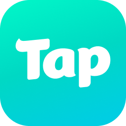

Cindy
AI Product Intern · TapTap & XD · Open-source AI agent with 10k+ stars
My product internship at Cindy centers on plugin products, cross-device collaboration, and interaction prototypes.
Plugin & Skill products
Defined use cases and MVP scope for podcast understanding, reading, and design-software integration, then advanced proposals, implementation, and reviews for Podcast Insights, Rhino Bridge, and related tools.
Cross-device interactions & collaboration
Contributed to group-chat, topic, and attachment-delivery interactions across desktop, mobile, and external messaging channels, validating usability at the receiving end.
Product research & interaction prototypes
Researched SkillHub and task tracking, structured information hierarchies, states, and flows, and built HTML interaction prototypes to support product reviews.
Across all three areas: clarify requirements → prototype decisions → implement with AI assistance → validate in real clients and review the outcome.
- 01RequirementsPRDs and acceptance criteria
- 02PrototypeInteractions and states
- 03ImplementationPlugins, Skills, attachments
- 04ReviewPRs and threads
- 05Real clientRecipient can open it
- 06RetrospectiveCauses and checks
When step 5 fails, return to step 3: identify the cause, then add the relevant checks to the workflow.
PR figures as of Nov 19, 2026; stars and Trending describe the overall team project.
View project